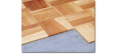

2023年
問題154 木質床材の特徴と維持管理に関する次の記述のうち，最も不適当なものはどれか．
（1）木質床材は，無垢の単層フローリングと，合板を台板とした複合フローリングに分けられる．
（2）体育館の床板の剥離による負傷事故防止として，日常清掃の水拭きの禁止が文部科学省から通知された．
（3）体育館のシール加工には，ポリウレタン樹脂が多く使われている．
（4）シールされていない杉材は，多孔質の特徴を有することから，油性の保護剤でシールする．
（5）一般的に針葉樹の床材は，広葉樹の床材に比べ，木質が硬い．
2023年
問題154 正解（5） 頻出度AAA
木質が固いのは広葉樹の床材である．
木製床材については，2023-154-1表参照．
2023-154-1表 建材に使用される代表的な樹木
| 樹種 | 特徴・用途 | |
| 針葉樹 | 杉，松，ひのき，もみ，つが | 概して木質が軟らかい フローリングボード 縁甲板※，建具，造作 |
| 広葉樹 | なら，けやき，くり，ぶな，か えで，かし，ラワン | 木質が硬い フローリングブロック※ モザイクパーケット※ |
出典 公益社団法人 日本建築衛生管理教育センター
「新建築物の環境衛生管理第2版第1刷」下巻73頁 表7-4-2(5)
※ 縁甲板：和風廊下などに用いられる長尺の床板材．
※ フローリングブロック，モザイクパーケット：いずれも広葉樹木片を組み合わせた寄木細工風の床材（50cm×50cm程度の正方形のものが多い）．後者が高級品．2023-154-1図参照．
2023-154-1図 フローリングブロックの例

出典 日本床工事工業株式会社
http://www.nihon-yuka.co.jp/method/yosegi.html
-(1) 複合フローリングは，基材となる集成材や合板の上に薄くスライスした天然木（単板）や化粧シートなどを張り合わせて作られた床材
-(2) 平成29年，体育館の床から剝離した床板が腹部に突き刺さり重傷を負うなどの事故の報告があったため，文部科学省が，水拭き及びワックス掛けの禁止を通知している．
-(3) 美観と適切な滑りを確保するため，体育館のフローリング床はポリウレタン樹脂塗料で塗装（シール）されていることが多い．
-(4) シールされていない木製床材の表面保護には油性ワックス，フロアオイルを用いる．